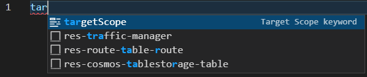
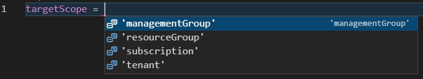
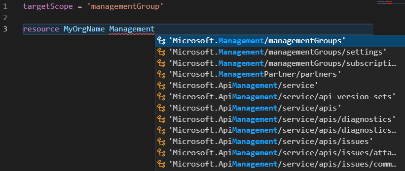
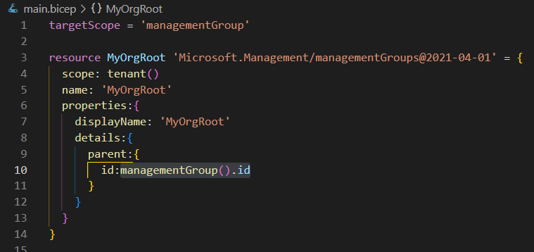

8 minutes
Azure Management Groups, as Code
This guide will give you an introduction to use Management Groups in Azure and how to create them as code. If you want to try this out yourself as a lab, you must first ensure that you have the pre-requisites ready.
This guide depends on the following:
| Tool | Link |
|---|---|
| Azure Bicep Cli | Bicep Cli install instructions |
| VSCode + Bicep Extension | Getting Up And Ready With VSCode and VSCode Productivity hints |
| Azure Powershell | Setup Azure Powershell |
| Azure Account | Register Free Azure Account |
| User account with sufficient privileges to create Management Groups in the Tenant Root group | Register Free Azure Account (See the “Enable Management Groups” section) |
ManagementGroup Structure
ManagementGroups are basically containers that contains your organisations subscriptions. By defining Roles and Policies and assigning those to ManagementGroups, the definitions and assignments of those will be inherited down the hierarchy to other management groups subscriptions, resourcegroups and finally resources.

For enterprise scale Azure environments this is a very good governance tool. The management group structure cascades down from the “Tenant Root Group” which is the first Management group that Azure automatically creates for you, this group cannot be deleted and will allways be the top scope.
By default no user has any privileges on the Tenant Root Group, but a
The Microsoft Cloud Adoption Framework
Microsoft has developed architectural guidelines for cloud adoption - the Microsoft Cloud Adoption framework which is a proven framework for successful cloud adoption. I strongly recommend that you give it a good read before implementing Azure for an organization. Bundled with this is also a lot of templates and artifacts that you can use as base for your Azure landing zones, have a look at this Enterprise Scale Github repository. This will give you the foundation from where you can define your Azure Landing Zones - the templates for any new subscriptions you issue for your organization.
Defining your Management Group Structure - as code
You can build your management group structure from the Azure portal, but by defining it as code, you will get a version controlled, modular and reusable deployment method.
The management group structure we will deploy for lab purposes will be based on one that Microsoft have examplified in the picture below for Microsofts favourite example organization - Contoso. You can modify this structure to fit your organization, but I recommend you to stay as close to the Microsoft model as possible.

I have made an Azure Bicep file that represents the modified deployment we will to make to the tenant root group. Open or download the bicep file, but I suggest you just use it as support for writing your own file, just to get the hands on practice with Bicep and VSCode.
targetScope
The file starts with the statement targetScope = 'managementGroup', this tells Bicep that this deployment is going to be deployed to the management group scope, and the syntax used in the template will be analyzed from that perspective. If you start typing tar and press Ctrl+Space, the VSCode Bicep extension intellisense will suggest the word targetscope, accept it by pressing enter.

To get the syntax in VSCode with the bicep extension you can write the keyword like targetscope =.
VSCode will suggest 'managementGroup' if you press Ctrl+Space, you scroll down with your arrow keys and accept the suggestion by pressing enter.

resource
Next you need to define your organizations top level management group that will be deployed in the Tenant Root Group. Start by typing the keyword resource, if intellisense pops up the word for you, just accept the suggestion with enter.

Next add the name for this bicep resource, I’ll use the same name (MyOrgName) for the resource as the name for the managment group. Other related resources can refer to properties of this resource by referencing the resourcename.propertyname, it will be clearer as we move along. You can use your organisation name like Microsoft have used the “Contoso” in their example.
Next you press Ctrl+Space to select the resource type. You can start typing managementGroups or simply scroll all the way through the list with arrowkeys and PageUp / PageDown keys until you find the resource. Confirm the list-item with the Enter key. Next VSCode should ask you for the API-version, if not you just press Ctrl+Space to get that syntax suggestion. I usually choose the latest API-version. Just keep using Ctrl+Space arrowkeys and enter to get the syntax suggestions for = and required properties.
Name
Now you should have the name: tag there encapsulated by { }. Enter a name for your top management group (I used ‘MyOrgName’) encapsulated by ' '.
Scope
In the line after the name tag, press Ctrl+Space and select scope, then use the tenant() function as scope.
Display Name
Keep using the Ctrl+Spaceto build the resource definition. The displayNameis a subkey to the properties key and can be the same as name or a more verbose descriptive name that will be shown in the overview in the Azure portal. The name is the unique identifier for this management group.
Parent
The parent key is a reference to where in the management group structure this management group will be located. By referencing the id of the parent management group it will be a child to that one.
Now things might get a little confusing, but the Bicep extension will help you getting things right! (Doing the same thing with ARM-json is much worse, I promise!)
You will reference the management group id in the id key which is a subkey to the parent key. The parent key is inside the details key which is inside the properties key. You get a lot of navigation assistance for the hierarchy of the Bicep code from the indentation, bracket colors and the guides to the left.

To specify the id of the target management group for this deployment (in this case the Tenant Root group) you can use the Bicep function managementGroup().id.
Next resource
When you are done with the first management group you just repeat the same procedure again (hint, use copy paste and modify some fields). The name for the bicep resource, and the tags name, displayname and id are the values you need to change for each management group resource you define. All the id tags for the parent property is now referencing slightly different. Instead of using the managementGroup().id function, you reference the object id property of the parent management group you want the resource to child of with dot-referencing the id property of the parent object; id: MyOrgName.id. For a child of the ‘Platform’ management group the reference would be id:Platform.id instead. It’s as easy as that!
Deploying the management groups
When your file is completed and free of errors you can deploy it with PowerShell or Azure cli, I prefer PowerShell so that’s what this guide will use.
Find the Tenant ID
Connect-AzAccount
$Tenant = Get-AzTenant
$ManagementGroup = Get-AzManagementGroup $Tenant.TenantId
You can now check the details for your top level Management Group stored in the $Managementgroup variable.
$ManagementGroup
Id : /providers/Microsoft.Management/managementGroups/xxxxxxxx-xxxx-xxxx-xxxx-xxxxxxxxxxxx
Type : /providers/Microsoft.Management/managementGroups
Name : xxxxxxxx-xxxx-xxxx-xxxx-xxxxxxxxxxxx
TenantId : xxxxxxxx-xxxx-xxxx-xxxx-xxxxxxxxxxxx
DisplayName : Tenant Root Group
UpdatedTime : 2021-12-28 17:31:33
UpdatedBy :
ParentId :
ParentName :
ParentDisplayName :
Deploying
New-AzManagementGroupDeployment -ManagementGroupId $ManagementGroup.Id -Templatefile ".\main.bicep" -Name 'MananagementGroupsDeployment' -Location 'WestEurope'
Please note that for Location you can use your location of preference.
Move the existing subscription into a management group with PowerShell
The quickest and easiest way to move a subscription into a management group is by using Azure Powershell or Azure Cli.To use PowerShell you just use the New-AzManagementGroupSubscription cmdlet as below. (replace the subscriptionId with the id of the subscription you want to move and the GroupId with the management group you want to move it into)
#Alternative 1: Using variables to supply the parameters
$SubscriptionId = '12345678-1234-1234-1234-123456789012'
$GroupId = 'Corp'
New-AzManagementGroupSubscription -GroupId $GroupId -SubscriptionId $SubscriptionId
#Alternative 2: Using splatting to supply the parameters
$Params = @{
SubscriptionId = '12345678-1234-1234-1234-123456789012'
GroupId = 'Corp'
}
New-AzManagementGroupSubscription @Params
#Alternative 3: Using splatting with parameters in the hashtable, useful in a script where you are iterating through a loop
$SubscriptionId = '12345678-1234-1234-1234-123456789012'
$GroupId = 'Corp'
$Params = @{
SubscriptionId = $SubscriptionId
GroupId = $GroupId
}
New-AzManagementGroupSubscription @Params
#Alternative 4: Just supplying the values to each parameter without variables
New-AzManagementGroupSubscription -GroupId 'Corp' -SubscriptionId '12345678-1234-1234-1234-123456789012'
Moving the subscription with Bicep
You can also move the subscription by deploying an ARM or Bicep template file. This example uses Bicep, and I recommend Bicep over ARM except for the few cases where there is some Bicep limitation leaving you without a choice. Microsoft is still developing Bicep, but it already has a great coverage in Azure.
Download this Bicep File, then deploy the template with Azure PowerShell.
#Splatting parameters to make it more readable
$Params = @{
Templatefile = '.\MoveSubscription.bicep'
TemplateParameterObject = @{
TargetMgId = 'Corp'
subscriptionId = '12345678-1234-1234-1234-123456789012'
}
Location = 'WestEurope'
Name = 'MovingSubscriptionFoo'
}
New-AzTenantDeployment @Params
Notice that the parameters defined in the Bicep file was passed in the TemplateParameterObject parameter as a hashtable, to be consumed in the Name key in the Bicepfile.
For this use-case, deploying the Bicep feels like taking the long route, but getting used to working with Bicep is very useful for a lot of other use-cases.
Conclusion
Now you know how to deploy a management groups as code! By using the techniques above you can efficiently and repeatedly create management group structures and with a few lines of extra code you can also quickly move sets of subscriptions into the managementgroups. If you are interrested in a post about those scenarios, you can contact me on LinkedIn.